OpenClaw 接入飞书
OpenClaw（原 Clawdbot）是一个开源、本地优先的 AI 代理网关，能让大模型在你的电脑/服务器上 7X24 小时运行，支持直接操作电脑、浏览网页、执行命令，还能无缝接入飞书、Telegram、Discord 等聊天平台。
本章节我们将 OpenClaw 接入飞书，实现消息推送、发图、收文件，审批交互、数据同步等自动化场景。
如果你还没安装 OpenClaw，需要先安装：
使用 npm 命令全局安装：
npm install -g openclaw@latest --registry=https://registry.npmmirror.com
或使用 pnpm 命令安装：
pnpm add -g openclaw@latest
OpenClaw 安装可以详细参考：OpenClaw (Clawdbot) 教程。
安装飞书官方插件
新版本 OpenClaw 已内置支持，我们可以使用以下命令来启用：
openclaw plugins enable feishu
接下来我们可以使用 openclaw plugins list 命令来查看是否已启用，disabled 是禁用，loaded 是启用：
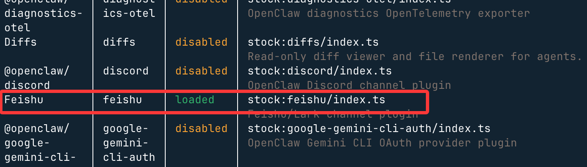
在飞书开放平台创建机器人
打开飞书开放平台 https://open.feishu.cn/app 点击"创建企业自建应用"：
填应用名称（如 "我的 OpenClaw AI"），描述 + 图标随意：
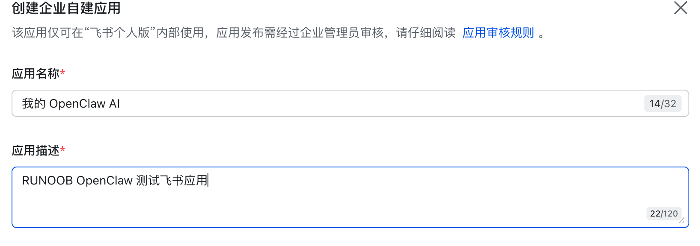
复制凭证 App ID 和 App Secret，后面要用到：

接下来重新回到终端 输入以下命令配置 channel：
openclaw channels add
选择 "Feishu/Lark (飞书) (needs app creds)"：
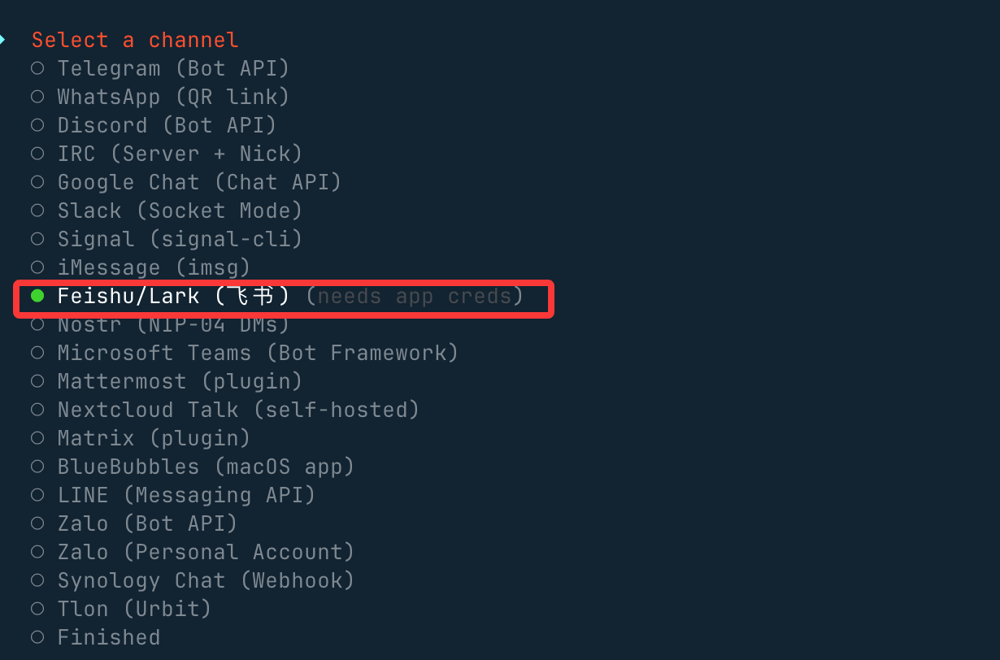
选择 "Enter App Secret"：

分别输入我们之前在飞书创建应用的 App Secret 和 App ID：
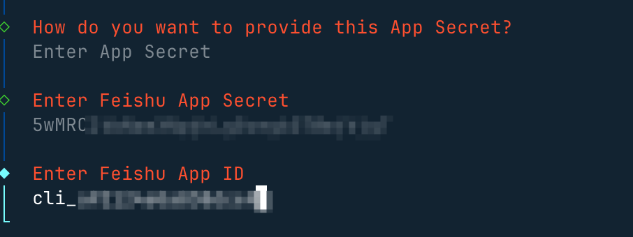
设置连接模式，并使用国内域名：

接下来的群聊策略选择 Open，这样可以响应所有的群聊：

如果选择 Allowlist，只会在白名单的群聊可以响应。
选择往后，回到菜单选择 Finished ，然后其他按默认回车即可，这样就就完成了飞书的配置。
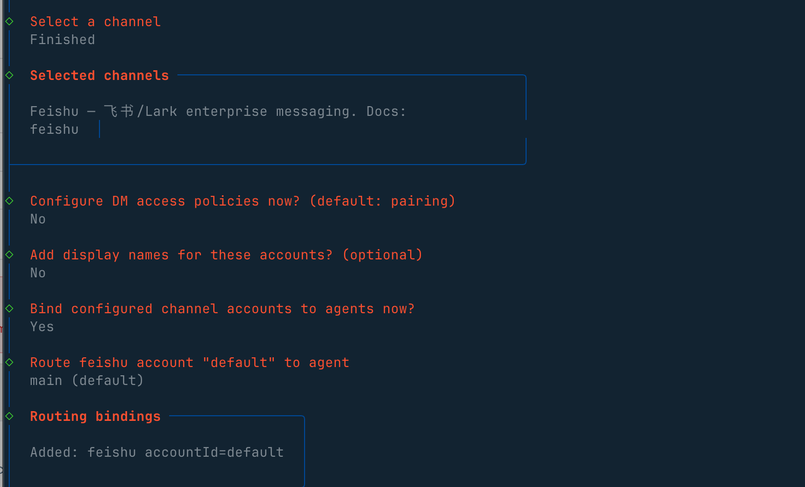
回到网页端，查看频道选项，可以看到飞书已经启用：

启用机器人能力
接下来回到我们飞书创建的应用界面，左侧菜单 → 添加应用能力 → 机器人，点击"添加"按钮，开启机器人能力：

配置权限，左侧 → 权限管理 → 批量批量导入/导出权限：
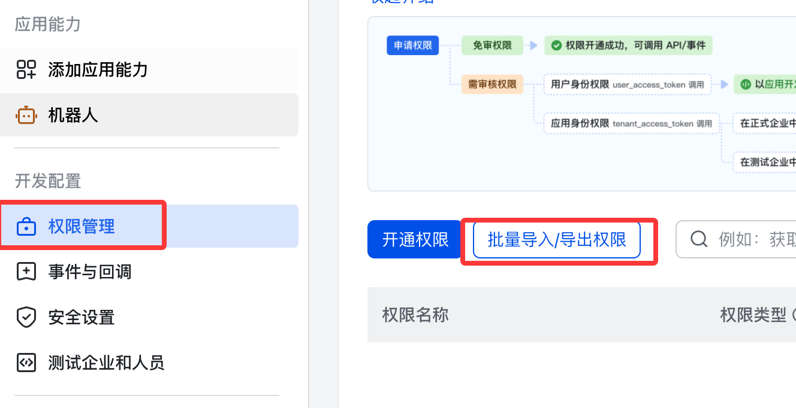
粘贴以下 JSON：
{
"scopes": {
"tenant": [
"aily:file:read",
"aily:file:write",
"application:application.app_message_stats.overview:readonly",
"application:application:self_manage",
"application:bot.menu:write",
"cardkit:card:read",
"cardkit:card:write",
"contact:user.employee_id:readonly",
"corehr:file:download",
"event:ip_list",
"im:chat.access_event.bot_p2p_chat:read",
"im:chat.members:bot_access",
"im:message",
"im:message.group_at_msg:readonly",
"im:message.p2p_msg:readonly",
"im:message:readonly",
"im:message:send_as_bot",
"im:resource"
],
"user": ["aily:file:read", "aily:file:write", "im:chat.access_event.bot_p2p_chat:read"]
}
}

权限列表：
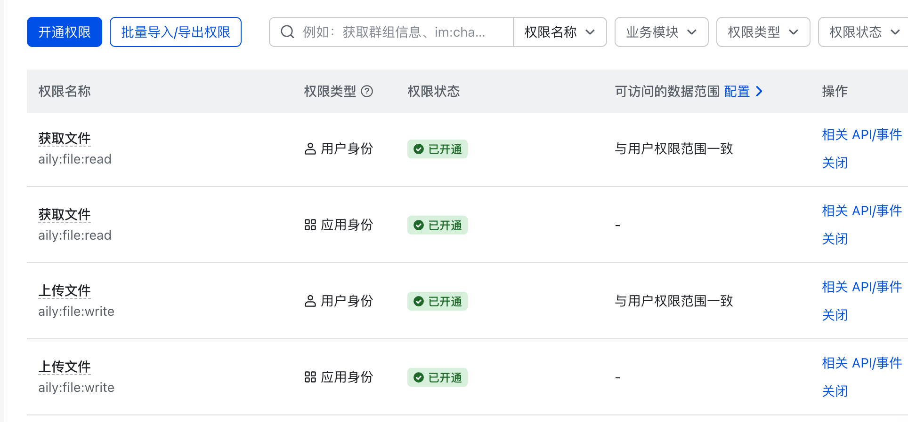
配置事件订阅
接下来我们需要为应用订阅相关事件，在左侧菜单选择事件与回调 → 事件配置：

订阅方式使用长连接接收事件（WebSocket）,然后保存。
添加以下事件：
- im.message.receive_v1- 接收消息
- im.message.message_read_v1- 消息已读回执
- im.chat.member.bot.added_v1- 机器人进群
- im.chat.member.bot.deleted_v1- 机器人被移出群

已添加事件列表：
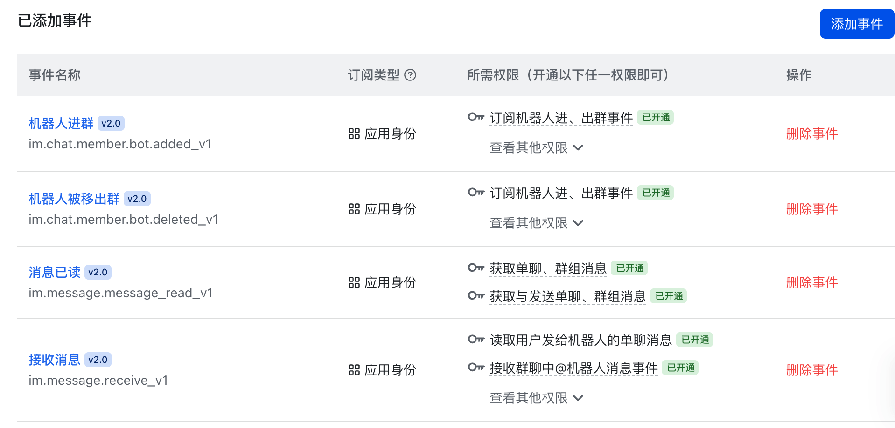
发布应用
左侧 → 版本管理与发布 → 创建版本 → 提交审核 → 发布：

发布信息：
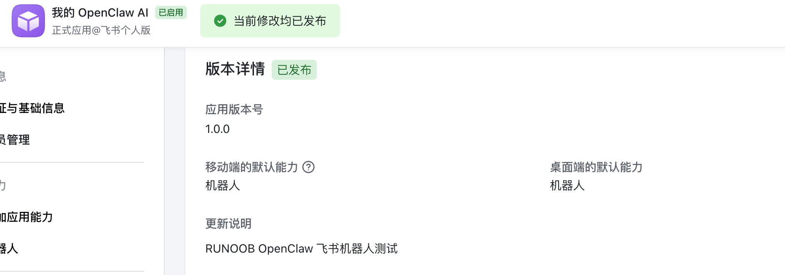
启动并测试
启动 openclaw：
openclaw gateway 或 openclaw gateway --port 18789
使用飞书创建一个测试群：
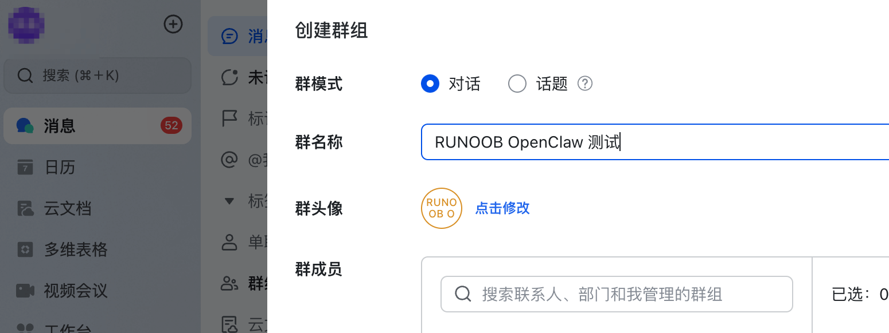
在群组的设置中添加我们刚才创建的机器人：
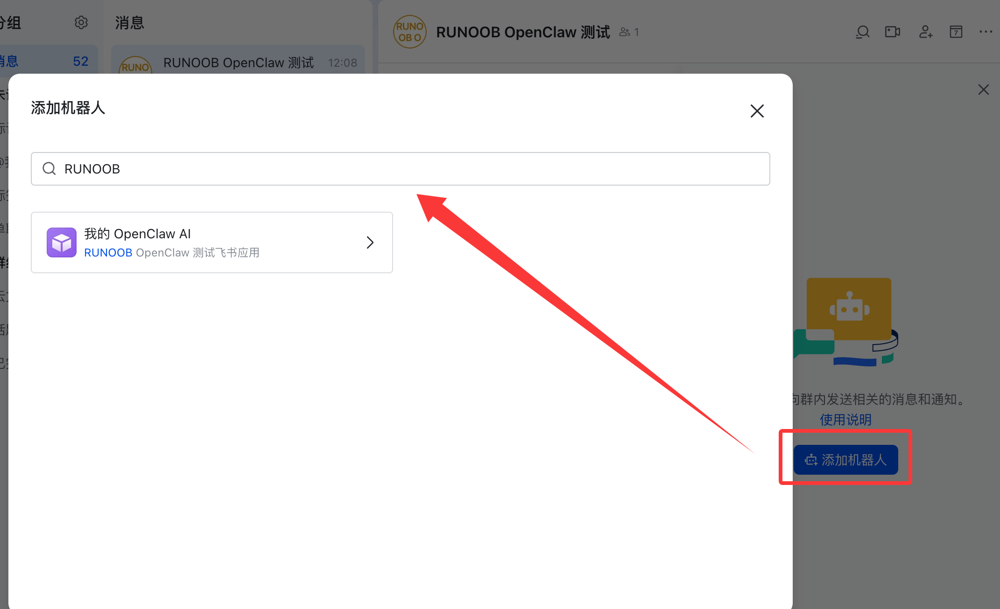
接下来我们就可以和 OpenClaw 开始聊天， 可以 @ 它让它介绍下自己，正常回复说明流程跑通了：